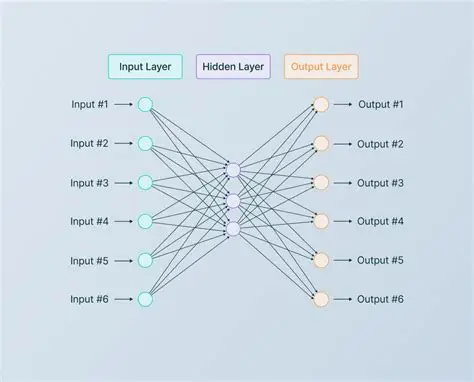

| Assignment Type | Assignment — Experimental Report |
|---|---|
| Topic | Comparing ascending vs. descending neuron distributions in hidden layers using TensorFlow |
| Parameter | Value |
|---|---|
| Dataset | Regression |
| Features | X1, X2, X1², X2², X1X2, sin(X1), sin(X2) |
| Noise | 50 |
| Batch Size | 15 |
| Train / Test Ratio | 30% |
| Learning Rate | 0.1 |
| Activation Function | Tanh |
| Regularization | None |


| Epoch | Test Loss | Training Loss |
|---|---|---|
| Initial | 0.140 | 0.167 |
| 176 | 0.040 | 0.037 |
| 503 | 0.033 | 0.031 |
| 1,045 | 0.033 | 0.031 |
Conclusion: The ascending architecture stabilized quickly and produced consistent, stable results after epoch 500. No degradation was observed over extended training.
| Epoch | Test Loss | Training Loss |
|---|---|---|
| Initial | 0.151 | 0.184 |
| 200 | 0.036 | 0.030 |
| 525 | 0.037 | 0.030 |
| 1,028 | 0.041 | 0.032 |
Conclusion: The descending architecture took longer to stabilize and showed signs of test loss degradation over extended training, contrary to the expectation that funnel-shaped architectures are always superior.
| Assignment Type | Lab — Reinforcement Learning Experimentation |
|---|---|
| Topic | Deep reinforcement learning for multi-agent traffic navigation |
| Source | Lex Fridman — YouTube |
The Deep Traffic Model was developed as a crowdsourced benchmark to study how deep reinforcement learning (RL) methods can learn traffic navigation policies. By offering a browser-based interface, it attracted broad participation from beginners to experienced practitioners. The project collected more than 24,000 submissions, collectively optimizing roughly 572 million neural-network parameters and running simulations equivalent to about 96.6 years of RL training time.
Key findings: larger networks often achieved better performance, but gains depended on balancing model capacity with input dimensionality and training iterations. Temporal modeling was less decisive than many participants expected, indicating that well-chosen state representations and stable training procedures can outweigh more complex temporal dynamics.
Hands-on neural network experimentation taught me that theoretical expectations don’t always match empirical results. The ascending architecture’s superior stability challenged my prior assumption that funnel-shaped networks are always the better design choice. In practice, the bottleneck at the first layer of the ascending model may have forced the network to learn more compressed, generalizable representations early, leading to more stable long-term performance.
The Deep Traffic lab reinforced that crowdsourced experimentation can push performance boundaries that individual efforts struggle to exceed. Sharing hyperparameters and ideas within a community accelerates learning exponentially — a principle that applies far beyond machine learning.
Fridman, Lex, et al. “DeepTraffic: Crowdsourced Hyperparameter Tuning of Deep Reinforcement Learning Systems for Multi-Agent Dense Traffic Navigation.” arXiv (Cornell University), Jan. 2018, https://doi.org/10.48550/arxiv.1801.02805.